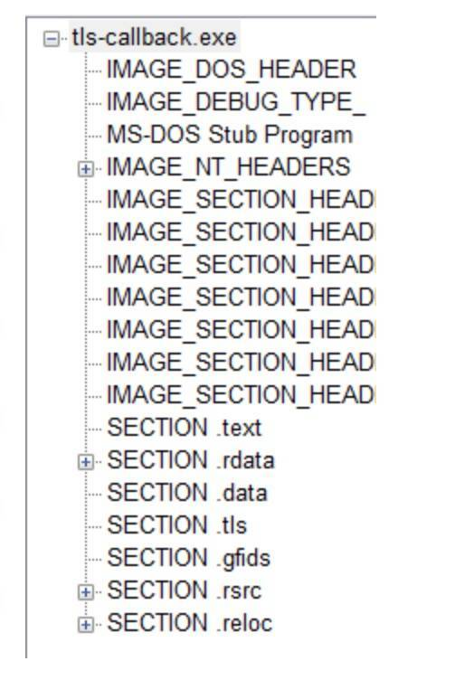

转载的一篇文章，自己进行更详细的尝试。原文地址 。反调试技术，恶意代码用它识别是否被调试，或者让调试器失效。恶意代码编写者意识到分析人员经常使用调试器来观察恶意代码的操作，因此他们使用反调试技术尽可能地延长恶意代码的分析时间。为了阻止调试器的分析，当恶意代码意识到自己被调试时，它们可能改变正常的执行路径或者修改自身程序让自己崩溃，从而增加调试时间和复杂度。很多种反调试技术可以达到反调试效果。这里介绍当前常用的几种反调试技术，同时也会介绍一些逃避反调试的技巧。https://github.com/LordNoteworthy/al-khaser
一、探测调试器 反调试技术，恶意代码用它识别是否被调试，或者让调试器失效。恶意代码编写者意识到分析人员经常使用调试器来观察恶意代码的操作，因此他们使用反调试技术尽可能地延长恶意代码的分析时间。为了阻止调试器的分析，当恶意代码意识到自己被调试时，它们可能改变正常的执行路径或者修改自身程序让自己崩溃，从而增加调试时间和复杂度。很多种反调试技术可以达到反调试效果。这里介绍当前常用的几种反调试技术，同时也会介绍一些逃避反调试的技巧。
1、使用Windows API 使用Windows API函数检测调试器是否存在是最简单的反调试技术。Windows操作系统中提供了这样一些API，应用程序可以通过调用这些API，来检测自己是否正在被调试。这些API中有些是专门用来检测调试器的存在的，而另外一些API是出于其他目的而设计的，但也可以被改造用来探测调试器的存在。其中很小部分API函数没有在微软官方文档显示。通常，防止恶意代码使用API进行反调试的最简单的办法是在恶意代码运行期间修改恶意代码，使其不能调用探测调试器的API函数，或者修改这些API函数的返回值，确保恶意代码执行合适的路径。与这些方法相比，较复杂的做法是挂钩这些函数，如使用rootkit技术。
关于 DebugAPI 请看这里 debugapi.h
IsDebuggerPresent IsDebuggerPresent 查询进程环境块(PEB)中的IsDebugged标志。如果进程没有运行在调试器环境中，函数返回0；如果调试附加了进程，函数返回一个非零值。
BOOL IsDebuggerPresent ( )
BOOL CheckDebug () return IsDebuggerPresent(); }
CheckRemoteDebuggerPresent CheckRemoteDebuggerPresent 同IsDebuggerPresent几乎一致。它不仅可以探测系统其他进程是否被调试，通过传递自身进程句柄还可以探测自身是否被调试。
BOOL CheckRemoteDebuggerPresent ( HANDLE hProcess, PBOOL pbDebuggerPresent )
CheckRemoteDebuggerPresent 中的 Remote 不是说调试器一定存在于其他计算机，而是说其存在于一个单独的进程中。而 IsDebuggerPresent 则是用来检查调试器是否运行在本进程中。
如果有远程调试器存在，那么就会返回一个 非0值，如果函数执行失败，会返回一个非0值。这个时候可以用 GetLastError() 来获取失败的原因。
BOOL CheckDebug () BOOL ret; CheckRemoteDebuggerPresent(GetCurrentProcess(), &ret); return ret; }
NtQueryInformationProcess 已经标记为可能修改或者在将来的 Windows 版本中不可用了。其应该使用其他可选的函数。
__kernel_entry NTSTATUS NtQueryInformationProcess ( IN HANDLE ProcessHandle, IN PROCESSINFOCLASS ProcessInformationClass, OUT PVOID ProcessInformation, IN ULONG ProcessInformationLength, OUT PULONG ReturnLength )
这个函数是Ntdll.dll中一个API，它用来提取一个给定进程的信息。它的第一个参数是进程句柄，第二个参数告诉我们它需要提取进程信息的类型。为第二个参数指定特定值并调用该函数，相关信息就会设置到第三个参数。第二个参数是一个枚举类型，其中与反调试有关的成员有ProcessDebugPort(0x7)、ProcessDebugObjectHandle(0x1E)和ProcessDebugFlags(0x1F)。例如将该参数置为ProcessDebugPort，如果进程正在被调试，则返回调试端口，否则返回0。
BOOL CheckDebug () int debugPort = 0 ; HMODULE hModule = LoadLibrary("Ntdll.dll" ); NtQueryInformationProcessPtr NtQueryInformationProcess = (NtQueryInformationProcessPtr)GetProcAddress(hModule, "NtQueryInformationProcess" ); NtQueryInformationProcess(GetCurrentProcess(), 0x7 , &debugPort, sizeof (debugPort), NULL ); return debugPort != 0 ; } BOOL CheckDebug () HANDLE hdebugObject = NULL ; HMODULE hModule = LoadLibrary("Ntdll.dll" ); NtQueryInformationProcessPtr NtQueryInformationProcess = (NtQueryInformationProcessPtr)GetProcAddress(hModule, "NtQueryInformationProcess" ); NtQueryInformationProcess(GetCurrentProcess(), 0x1E , &hdebugObject, sizeof (hdebugObject), NULL ); return hdebugObject != NULL ; } BOOL CheckDebug () BOOL bdebugFlag = TRUE; HMODULE hModule = LoadLibrary("Ntdll.dll" ); NtQueryInformationProcessPtr NtQueryInformationProcess = (NtQueryInformationProcessPtr)GetProcAddress(hModule, "NtQueryInformationProcess" ); NtQueryInformationProcess(GetCurrentProcess(), 0x1E , &bdebugFlag, sizeof (bdebugFlag), NULL ); return bdebugFlag != TRUE; }
GetLastError 编写应用程序时，经常需要涉及到错误处理问题。许多函数调用只用TRUE和FALSE来表明函数的运行结果。一旦出现错误，MSDN中往往会指出请用GetLastError ()函数来获得错误原因。恶意代码可以使用异常来破坏或者探测调试器。调试器捕获异常后，并不会立即将处理权返回被调试进程处理，大多数利用异常的反调试技术往往据此来检测调试器。 多数调试器默认的设置是捕获异常后不将异常传递给应用程序。如果调试器不能将异常结果正确返回到被调试进程，那么这种异常失效可以被进程内部的异常处理机制探测。
对于OutputDebugString函数，它的作用是在调试器中显示一个字符串，同时它也可以用来探测调试器的存在。使用SetLastError函数，将当前的错误码设置为一个任意值。如果进程没有被调试器附加，调用OutputDebugString函数会失败，错误码会重新设置，因此GetLastError获取的错误码应该不是我们设置的任意值。但如果进程被调试器附加，调用OutputDebugString函数会成功，这时GetLastError获取的错误码应该没改变。
BOOL CheckDebug () DWORD errorValue = 12345 ; SetLastError(errorValue); OutputDebugString("Test for debugger!" ); if (GetLastError() == errorValue) { return TRUE; } else { return FALSE; } }
对于DeleteFiber函数，如果给它传递一个无效的参数的话会抛出ERROR_INVALID_PARAMETER异常。如果进程正在被调试的话，异常会被调试器捕获。所以，同样可以通过验证LastError值来检测调试器的存在。如代码所示，0x57就是指ERROR_INVALID_PARAMETER。
BOOL CheckDebug () char fib[1024 ] = {0 }; DeleteFiber(fib); return (GetLastError() != 0x57 ); }
同样还可以使用CloseHandle、CloseWindow产生异常，使得错误码改变。
BOOL CheckDebug () DWORD ret = CloseHandle((HANDLE)0x1234 ); if (ret != 0 || GetLastError() != ERROR_INVALID_HANDLE) { return TRUE; } else { return FALSE; } } BOOL CheckDebug () DWORD ret = CloseWindow((HWND)0x1234 ); if (ret != 0 || GetLastError() != ERROR_INVALID_WINDOW_HANDLE) { return TRUE; } else { return FALSE; } }
ZwSetInformationThread 拥有两个参数，第一个参数用来接收当前线程的句柄，第二个参数表示线程信息类型，若其值设置为ThreadHideFromDebugger(0x11)，使用语句ZwSetInformationThread(GetCurrentThread(), ThreadHideFromDebugger, NULL, 0);调用该函数后，调试进程就会被分离出来。该函数不会对正常运行的程序产生任何影响，但若运行的是调试器程序，因为该函数隐藏了当前线程，调试器无法再收到该线程的调试事件，最终停止调试。还有一个函DebugActiveProcessStop用来分离调试器和被调试进程，从而停止调试。两个API容易混淆，需要牢记它们的区别。
NTSYSAPI NTSTATUS ZwSetInformationThread ( HANDLE ThreadHandle, THREADINFOCLASS ThreadInformationClass, PVOID ThreadInformation, ULONG ThreadInformationLength )
2、手动检测数据结构 虽然使用Windows API是探测调试器存在的最简单办法，但手动检查数据结构是恶意代码编写者最常使用的办法。这是因为很多时候通过Windows API实现的反调试技术无效，例如这些API函数被rootkit挂钩，并返回错误信息。因此，恶意代码编写者经常手动执行与这些API功能相同的操作。在手动检测中，PEB结构中的一些标志暴露了调试器存在的信息。这里，我们关注检测调试器存在常用的一些标志。
检测BeingDebugged属性 Windows操作系统维护着每个正在运行的进程的PEB结构，它包含与这个进程相关的所有用户态参数。这些参数包括进程环境数据，环境数据包括环境变量、加载的模块列表、内存地址，以及调试器状态。
PEB
typedef struct _PEB { BYTE Reserved1[2 ]; BYTE BeingDebugged; BYTE Reserved2[1 ]; PVOID Reserved3[2 ]; PPEB_LDR_DATA Ldr; PRTL_USER_PROCESS_PARAMETERS ProcessParameters; PVOID Reserved4[3 ]; PVOID AtlThunkSListPtr; PVOID Reserved5; ULONG Reserved6; PVOID Reserved7; ULONG Reserved8; ULONG AtlThunkSListPtr32; PVOID Reserved9[45 ]; BYTE Reserved10[96 ]; PPS_POST_PROCESS_INIT_ROUTINE PostProcessInitRoutine; BYTE Reserved11[128 ]; PVOID Reserved12[1 ]; ULONG SessionId; } PEB, *PPEB;
进程运行时，位置fs:[30h]指向PEB的基地址。为了实现反调试技术，恶意代码通过这个位置检查BeingDebugged标志，这个标志标识进程是否正在被调试
BOOL CheckDebug () int result = 0 ; __asm { mov eax, fs:[30 h] mov al, BYTE PTR [eax + 2 ] mov result, al } return result != 0 ; }
这种检查有多种形式，最终，条件跳转决定代码的路径。避免这种问题最简单的方法是在执行跳转指令前，手动修改零标志，强制执行跳转(或者不跳转)。
如图所示，这条命令会将BeingDebugged属性转储到转储面板窗口。右键单击BeingDebugged属性，选择Binary->Fill With 00’s，这时属性被设置为0。
OllyDbg的一些插件可以帮助我们修改BeingDebugged标志。其中最流行的有HideDebugger、Hidedebug和PhantOm。以PhantOm为例，同样将dll文件拷贝到OllyDbg的安装目录下就会自动安装。选择Plugins->PhantOm->Options选项，勾选hide from PEB即可。
检测ProcessHeap属性 Reserved数组中一个未公开的位置叫作ProcessHeap，它被设置为加载器为进程分配的第一个堆的位置。ProcessHeap位于PEB结构的0x18处。第一个堆头部有一个属性字段，它告诉内核这个堆是否在调试器中创建。这些属性叫作ForceFlags和Flags。在Windows XP系统中，ForceFlags属性位于堆头部偏移量0x10处；在Windows 7系统中，对于32位的应用程序来说ForceFlags属性位于堆头部偏移量0x44处。
BOOL CheckDebug () int result = 0 ; DWORD dwVersion = GetVersion(); DWORD dwWindowsMajorVersion = (DWORD)(LOBYTE(LOWORD(dwVersion))); if (dwWindowsMajorVersion == 5 ) { __asm { mov eax, fs:[30 h] mov eax, [eax + 18 h] mov eax, [eax + 10 h] mov result, eax } } else { __asm { mov eax, fs:[30 h] mov eax, [eax + 18 h] mov eax, [eax + 44 h] mov result, eax } } return result != 0 ; }
同样，恶意代码也可以检查Windows XP系统中偏移量0x0C处，或者Windows 7系统中偏移量0x40处的Flags属性。这个属性总与ForceFlags属性大致相同，但通常情况下Flags与值2进行比较。
BOOL CheckDebug () int result = 0 ; DWORD dwVersion = GetVersion(); DWORD dwWindowsMajorVersion = (DWORD)(LOBYTE(LOWORD(dwVersion))); if (dwWindowsMajorVersion == 5 ) { __asm { mov eax, fs:[30 h] mov eax, [eax + 18 h] mov eax, [eax + 0 ch] mov result, eax } } else { __asm { mov eax, fs:[30 h] mov eax, [eax + 18 h] mov eax, [eax + 40 h] mov result, eax } } return result != 2 ; }
避免这种问题方法和前面的差不多。如果用OllyDbg的命令行插件修改，输入的命令为dump ds:[fs:[30]+0x18]+0x10。如果用PhantOm插件，它会禁用调试堆创建功能而不需要手动设置。
检测NTGlobalFlag 由于调试器中启动进程与正常模式下启动进程有些不同，所以它们创建内存堆的方式也不同。系统使用PEB结构偏移量0x68处的一个未公开位置，来决定如何创建堆结构。如果这个位置的值为0x70，我们就知道进程正运行在调试器中。
BOOL CheckDebug () int result = 0 ; __asm { mov eax, fs:[30 h] mov eax, [eax + 68 h] and eax, 0x70 mov result, eax } return result != 0 ; }
操作系统创建堆时，值0x70是下列标志的一个组合。如果进程从调试器启动，那么进程的这些标志将被设置。
3、系统痕迹检测 通常，我们使用调试工具来分析恶意代码，但这些工具会在系统中驻留一些痕迹。恶意代码通过搜索这种系统痕迹，来确定你是否试图分析它。
查找调试器引用的注册表项 下面是调试器在注册表中的一个常用位置。
SOFTWARE\Microsoft\Windows NT\CurrentVersion\AeDebug(32位系统) SOFTWARE\Wow6432Node\Microsoft\WindowsNT\CurrentVersion\AeDebug(64位系统)
该注册表项指定当应用程序发生错误时，触发哪一个调试器。默认情况下，它被设置为Dr.Watson。如果该这册表的键值被修改为OllyDbg，则恶意代码就可能确定它正在被调试。
BOOL CheckDebug () BOOL is_64; IsWow64Process(GetCurrentProcess(), &is_64); HKEY hkey = NULL ; char key[] = "Debugger" ; char reg_dir_32bit[] = "SOFTWARE\\Microsoft\\Windows NT\\CurrentVersion\\AeDebug" ; char reg_dir_64bit[] = "SOFTWARE\\Wow6432Node\\Microsoft\\WindowsNT\\CurrentVersion\\AeDebug" ; DWORD ret = 0 ; if (is_64) { ret = RegCreateKeyA(HKEY_LOCAL_MACHINE, reg_dir_64bit, &hkey); } else { ret = RegCreateKeyA(HKEY_LOCAL_MACHINE, reg_dir_32bit, &hkey); } if (ret != ERROR_SUCCESS) { return FALSE; } char tmp[256 ]; DWORD len = 256 ; DWORD type; ret = RegQueryValueExA(hkey, key, NULL , &type, (LPBYTE)tmp, &len); if (strstr (tmp, "OllyIce" )!=NULL || strstr (tmp, "OllyDBG" )!=NULL || strstr (tmp, "WinDbg" )!=NULL || strstr (tmp, "x64dbg" )!=NULL || strstr (tmp, "Immunity" )!=NULL ) { return TRUE; } else { return FALSE; } }
查找窗体信息 FindWindow函数检索处理顶级窗口的类名和窗口名称匹配指定的字符串。
BOOL CheckDebug () if (FindWindowA("OLLYDBG" , NULL )!=NULL || FindWindowA("WinDbgFrameClass" , NULL )!=NULL || FindWindowA("QWidget" , NULL )!=NULL ) { return TRUE; } else { return FALSE; } }
EnumWindows函数枚举所有屏幕上的顶层窗口，并将窗口句柄传送给应用程序定义的回调函数。
BOOL CALLBACK EnumWndProc (HWND hwnd, LPARAM lParam) char cur_window[1024 ]; GetWindowTextA(hwnd, cur_window, 1023 ); if (strstr (cur_window, "WinDbg" )!=NULL || strstr (cur_window, "x64_dbg" )!=NULL || strstr (cur_window, "OllyICE" )!=NULL || strstr (cur_window, "OllyDBG" )!=NULL || strstr (cur_window, "Immunity" )!=NULL ) { *((BOOL*)lParam) = TRUE; } return TRUE; } BOOL CheckDebug () BOOL ret = FALSE; EnumWindows(EnumWndProc, (LPARAM)&ret); return ret; }
GetForegroundWindow获取一个前台窗口的句柄
BOOL CheckDebug () char fore_window[1024 ]; GetWindowTextA(GetForegroundWindow(), fore_window, 1023 ); if (strstr (fore_window, "WinDbg" )!=NULL || strstr (fore_window, "x64_dbg" )!=NULL || strstr (fore_window, "OllyICE" )!=NULL || strstr (fore_window, "OllyDBG" )!=NULL || strstr (fore_window, "Immunity" )!=NULL ) { return TRUE; } else { return FALSE; } }
为了防范这种技术，在OllyDbg的PhantOm插件中勾选hide OllyDbg windows。
查找进程信息 BOOL CheckDebug () DWORD ID; DWORD ret = 0 ; PROCESSENTRY32 pe32; pe32.dwSize = sizeof (pe32); HANDLE hProcessSnap = CreateToolhelp32Snapshot(TH32CS_SNAPPROCESS, 0 ); if (hProcessSnap == INVALID_HANDLE_VALUE) { return FALSE; } BOOL bMore = Process32First(hProcessSnap, &pe32); while (bMore) { if (stricmp(pe32.szExeFile, "OllyDBG.EXE" )==0 || stricmp(pe32.szExeFile, "OllyICE.exe" )==0 || stricmp(pe32.szExeFile, "x64_dbg.exe" )==0 || stricmp(pe32.szExeFile, "windbg.exe" )==0 || stricmp(pe32.szExeFile, "ImmunityDebugger.exe" )==0 ) { return TRUE; } bMore = Process32Next(hProcessSnap, &pe32); } CloseHandle(hProcessSnap); return FALSE; }
二、识别调试器行为 在逆向工程中，为了帮助恶意代码分析人员进行分析，可以使用调试器设置一个断点，或是单步执行一个进程。然而，在调试器中执行这些操作时，它们会修改进程中的代码。因此，恶意代码常使用几种反调试技术探测软件/硬件断点、完整性校验、时钟检测等几种类型的调试器行为。直接运行恶意代码与在调试器中运行恶意代码也会在一些细节上不同，如父进程信息、STARTUPINFO信息、SeDebugPrivilege权限等。
1、软件断点检查 调试器设置断点的基本机制是用软件中断指令INT 3临时替换运行程序中的一条指令，然后当程序运行到这条指令时，调用调试异常处理例程。INT 3指令的机器码是0xCC，因此无论何时，使用调试器设置一个断点，它都会插入一个0xCC来修改代码。恶意代码常用的一种反调试技术是在它的代码中查找机器码0xCC，来扫描调试器对它代码的INT 3修改。repne scasb指令用于在一段数据缓冲区中搜索一个字节。EDI需指向缓冲区地址，AL则包含要找的字节，ECX设为缓冲区的长度。当ECX=0或找到该字节时，比较停止。
BOOL CheckDebug () PIMAGE_DOS_HEADER pDosHeader; PIMAGE_NT_HEADERS32 pNtHeaders; PIMAGE_SECTION_HEADER pSectionHeader; DWORD dwBaseImage = (DWORD)GetModuleHandle(NULL ); pDosHeader = (PIMAGE_DOS_HEADER)dwBaseImage; pNtHeaders = (PIMAGE_NT_HEADERS32)((DWORD)pDosHeader + pDosHeader->e_lfanew); pSectionHeader = (PIMAGE_SECTION_HEADER)((DWORD)pNtHeaders + sizeof (pNtHeaders->Signature) + sizeof (IMAGE_FILE_HEADER) + (WORD)pNtHeaders->FileHeader.SizeOfOptionalHeader); DWORD dwAddr = pSectionHeader->VirtualAddress + dwBaseImage; DWORD dwCodeSize = pSectionHeader->SizeOfRawData; BOOL Found = FALSE; __asm { cld mov edi,dwAddr mov ecx,dwCodeSize mov al,0 CCH repne scasb jnz NotFound mov Found,1 NotFound: } return Found; }
2、硬件断点检查
在OllyDbg的寄存器窗口按下右键，点击View debug registers可以看到DR0、DR1、DR2、DR3、DR6和DR7这几个寄存器。DR0、Dr1、Dr2、Dr3用于设置硬件断点，由于只有4个硬件断点寄存器，所以同时最多只能设置4个硬件断点。DR4、DR5由系统保留。 DR6、DR7用于记录Dr0-Dr3中断点的相关属性。如果没有硬件断点，那么DR0、DR1、DR2、DR3这4个寄存器的值都为0。
BOOL CheckDebug () CONTEXT context; HANDLE hThread = GetCurrentThread(); context.ContextFlags = CONTEXT_DEBUG_REGISTERS; GetThreadContext(hThread, &context); if (context.Dr0 != 0 || context.Dr1 != 0 || context.Dr2 != 0 || context.Dr3!=0 ) { return TRUE; } return FALSE; }
3、执行代码校验和检查 恶意代码可以计算代码段的校验并实现与扫描中断相同的目的。与扫描0xCC不同，这种检查仅执行恶意代码中机器码CRC或者MD5校验和检查
BOOL CheckDebug () PIMAGE_DOS_HEADER pDosHeader; PIMAGE_NT_HEADERS32 pNtHeaders; PIMAGE_SECTION_HEADER pSectionHeader; DWORD dwBaseImage = (DWORD)GetModuleHandle(NULL ); pDosHeader = (PIMAGE_DOS_HEADER)dwBaseImage; pNtHeaders = (PIMAGE_NT_HEADERS32)((DWORD)pDosHeader + pDosHeader->e_lfanew); pSectionHeader = (PIMAGE_SECTION_HEADER)((DWORD)pNtHeaders + sizeof (pNtHeaders->Signature) + sizeof (IMAGE_FILE_HEADER) + (WORD)pNtHeaders->FileHeader.SizeOfOptionalHeader); DWORD dwAddr = pSectionHeader->VirtualAddress + dwBaseImage; DWORD dwCodeSize = pSectionHeader->SizeOfRawData; DWORD checksum = 0 ; __asm { cld mov esi, dwAddr mov ecx, dwCodeSize xor eax, eax checksum_loop : movzx ebx, byte ptr[esi] add eax, ebx rol eax, 1 inc esi loop checksum_loop mov checksum, eax } if (checksum != 0x46ea24 ) { return FALSE; } else { return TRUE; } }
4、时钟检测 被调试时，进程的运行速度大大降低，例如，单步调试大幅降低恶意代码的运行速度，所以时钟检测是恶意代码探测调试器存在的最常用方式之一。有如下两种用时钟检测来探测调试器存在的方法。
使用rdtsc指令 较常用的时钟检测方法是利用rdtsc指令(操作码0x0F31)，它返回至系统重新启动以来的时钟数，并且将其作为一个64位的值存入EDX:EAX中。恶意代码运行两次rdtsc指令，然后比较两次读取之间的差值。
BOOL CheckDebug () DWORD time1, time2; __asm { rdtsc mov time1, eax rdtsc mov time2, eax } if (time2 - time1 < 0xff ) { return FALSE; } else { return TRUE; } }
同rdtsc指令一样，这两个Windows API函数也被用来执行一个反调试的时钟检测。使用这种方法的前提是处理器有高分辨率能力的计数器-寄存器，它能存储处理器活跃的时钟数。为了获取比较的时间差，调用两次QueryPerformanceCounter 函数查询这个计数器。若两次调用之间花费的时间过于长，则可以认为正在使用调试器。GetTickCount 函数返回最近系统重启时间与当前时间的相差毫秒数(由于时钟计数器的大小原因，计数器每49.7天就被重置一次)。
BOOL QueryPerformanceCounter ( LARGE_INTEGER *lpPerformanceCount ) DWORD GetTickCount ( )
BOOL CheckDebug () DWORD time1 = GetTickCount(); __asm { mov ecx,10 mov edx,6 mov ecx,10 } DWORD time2 = GetTickCount(); if (time2-time1 > 0x1A ) { return TRUE; } else { return FALSE; } }
5、判断父进程是否是explorer.exe 一般双击运行的进程的父进程都是explorer.exe，但是如果进程被调试父进程则是调试器进程。也就是说如果父进程不是explorer.exe则可以认为程序正在被调试。
BOOL CheckDebug () LONG status; DWORD dwParentPID = 0 ; HANDLE hProcess; PROCESS_BASIC_INFORMATION pbi; int pid = getpid(); hProcess = OpenProcess(PROCESS_QUERY_INFORMATION, FALSE, pid); if (!hProcess) return -1 ; PNTQUERYINFORMATIONPROCESS NtQueryInformationProcess = (PNTQUERYINFORMATIONPROCESS)GetProcAddress(GetModuleHandleA("ntdll" ),"NtQueryInformationProcess" ); status = NtQueryInformationProcess(hProcess,SystemBasicInformation,(PVOID)&pbi,sizeof (PROCESS_BASIC_INFORMATION),NULL ); PROCESSENTRY32 pe32; pe32.dwSize = sizeof (pe32); HANDLE hProcessSnap = CreateToolhelp32Snapshot(TH32CS_SNAPPROCESS, 0 ); if (hProcessSnap == INVALID_HANDLE_VALUE) { return FALSE; } BOOL bMore = Process32First(hProcessSnap, &pe32); while (bMore) { if (pbi.InheritedFromUniqueProcessId == pe32.th32ProcessID) { if (stricmp(pe32.szExeFile, "explorer.exe" )==0 ) { CloseHandle(hProcessSnap); return FALSE; } else { CloseHandle(hProcessSnap); return TRUE; } } bMore = Process32Next(hProcessSnap, &pe32); } CloseHandle(hProcessSnap); }
6、判断STARTUPINFO信息 explorer.exe创建进程的时候会把STARTUPINFO 结构中的值设为0，而非explorer.exe创建进程的时候会忽略这个结构中的值，也就是结构中的值不为0。所以可以利用STARTUPINFO来判断程序是否在被调试。
typedef struct _STARTUPINFOA { DWORD cb; LPSTR lpReserved; LPSTR lpDesktop; LPSTR lpTitle; DWORD dwX; DWORD dwY; DWORD dwXSize; DWORD dwYSize; DWORD dwXCountChars; DWORD dwYCountChars; DWORD dwFillAttribute; DWORD dwFlags; WORD wShowWindow; WORD cbReserved2; LPBYTE lpReserved2; HANDLE hStdInput; HANDLE hStdOutput; HANDLE hStdError; } STARTUPINFOA, *LPSTARTUPINFOA;
BOOL CheckDebug () STARTUPINFO si; GetStartupInfo(&si); if (si.dwX!=0 || si.dwY!=0 || si.dwFillAttribute!=0 || si.dwXSize!=0 || si.dwYSize!=0 || si.dwXCountChars!=0 || si.dwYCountChars!=0 ) { return TRUE; } else { return FALSE; } }
7、判断是否具有SeDebugPrivilege权限 默认情况下进程是没有SeDebugPrivilege 权限的，但是当进程通过调试器启动时，由于调试器本身启动了SeDebugPrivilege权限，当调试进程被加载时SeDebugPrivilege也就被继承了。所以我们可以检测进程的SeDebugPrivilege权限来间接判断是否存在调试器，而对SeDebugPrivilege权限的判断可以用能否打开csrss.exe进程来判断。
BOOL CheckDebug () DWORD ID; DWORD ret = 0 ; PROCESSENTRY32 pe32; pe32.dwSize = sizeof (pe32); HANDLE hProcessSnap = CreateToolhelp32Snapshot(TH32CS_SNAPPROCESS, 0 ); if (hProcessSnap == INVALID_HANDLE_VALUE) { return FALSE; } BOOL bMore = Process32First(hProcessSnap, &pe32); while (bMore) { if (strcmp (pe32.szExeFile, "csrss.exe" )==0 ) { ID = pe32.th32ProcessID; break ; } bMore = Process32Next(hProcessSnap, &pe32); } CloseHandle(hProcessSnap); if (OpenProcess(PROCESS_QUERY_INFORMATION, NULL , ID) != NULL ) { return TRUE; } else { return FALSE; } }
三、干扰调试器的功能 恶意代码可以用一些技术来干扰调试器的正常运行。例如线程本地存储(TLS)回调、插入中断、异常等。这些技术当且仅当程序处于调试器控制之下时才试图扰乱程序的运行
1、使用TLS回调 Thread Local Storage(TLS)，即线程本地存储，是Windows为解决一个进程中多个线程同时访问全局变量而提供的机制。TLS可以简单地由操作系统代为完成整个互斥过程，也可以由用户自己编写控制信号量的函数。当进程中的线程访问预先制定的内存空间时，操作系统会调用系统默认的或用户自定义的信号量函数，保证数据的完整性与正确性。下面是一个简单的TLS回调的例子，TLS_CALLBACK1函数在main函数执行前调用IsDebuggerPresent函数检查它是否正在被调试。
#include "stdafx.h" #include <stdio.h> #include <windows.h> void NTAPI __stdcall TLS_CALLBACK1 (PVOID DllHandle, DWORD dwReason, PVOID Reserved) ;#ifdef _M_IX86 #pragma comment (linker, "/INCLUDE:__tls_used" ) #pragma comment (linker, "/INCLUDE:__tls_callback" ) #else #pragma comment (linker, "/INCLUDE:_tls_used" ) #pragma comment (linker, "/INCLUDE:_tls_callback" ) #endif EXTERN_C #ifdef _M_X64 #pragma const_seg (".CRT$XLB" ) const #else #pragma data_seg (".CRT$XLB" ) #endif PIMAGE_TLS_CALLBACK _tls_callback[] = { TLS_CALLBACK1,0 }; #pragma data_seg () #pragma const_seg () #include <iostream> void NTAPI __stdcall TLS_CALLBACK1 (PVOID DllHandle, DWORD Reason, PVOID Reserved) if (IsDebuggerPresent()) { printf ("TLS_CALLBACK: Debugger Detected!\n" ); } else { printf ("TLS_CALLBACK: No Debugger Present!\n" ); } } int main (int argc, char * argv[]) printf ("233\n" ); return 0 ; }
要在程序中使用TLS，必须为TLS数据单独建一个数据段，用相关数据填充此段，并通知链接器为TLS数据在PE文件头中添加数据。_tls_callback[]数组中保存了所有的TLS回调函数指针。数组必须以NULL指针结束，且数组中的每一个回调函数在程序初始化时都会被调用，程序员可按需要添加。但程序员不应当假设操作系统已何种顺序调用回调函数。如此则要求在TLS回调函数中进行反调试操作需要一定的独立性。

在OllyDbg中选择Options->Debugging Options->Events，然后设置System break-point作为第一个暂停的位置，这样就可以让OllyDbg在TLS回调执行前暂停。
在IDA Pro中按Ctrl+E快捷键看到二进制的入口点，该组合键的作用是显示应用程序所有的入口点，其中包括TLS回调。双击函数名可以浏览回调函数。
由于TLS回调已广为人知，因此同过去相比，恶意代码使用它的次数已经明显减少。为数不多的合法程序使用TLS回调，所以可执行程序中的.tls段特别突出。
2、利用中断 因为调试器使用INT 3来设置软件断点，所以一种反调试技术就是在合法代码段中插入0xCC(INT 3)欺骗调试器，使其认为这些0xCC机器码是自己设置的断点。
BOOL CheckDebug () __try { __asm int 3 } __except(1 ) { return FALSE; } return TRUE; }
除了使用_try和_except以外还可以直接使用汇编代码安装SEH。在下面的代码中如果进程没有处于调试中，则正常终止；如果进程处于调试中，则跳转到非法地址0xFFFFFFFF处，无法继续调试。
#include "stdio.h" #include "windows.h" #include "tchar.h" void AD_BreakPoint () printf ("SEH : BreakPoint\n" ); __asm { push handler push DWORD ptr fs:[0 ] mov DWORD ptr fs:[0 ], esp int 3 mov eax, 0xFFFFFFFF jmp eax handler: mov eax, dword ptr ss:[esp+0xc ] mov ebx, normal_code mov dword ptr ds:[eax+0xb8 ], ebx xor eax, eax retn normal_code: pop dword ptr fs:[0 ] add esp, 4 } printf (" => Not debugging...\n\n" ); } int _tmain(int argc, TCHAR* argv[]){ AD_BreakPoint(); return 0 ; }
双字节操作码0xCD03也可以产生INT 3中断，这是恶意代码干扰WinDbg调试器的有效方法。在调试器外，0xCD03指令产生一个STATUS_BREAKPOINT异常。然而在WinDbg调试器内，由于断点通常是单字节机器码0xCC，因此WinDbg会捕获这个断点然后将EIP加1字节。这可能导致程序在被正常运行的WinDbg调试时，执行不同的指令集(OllyDbg可以避免双字节INT 3的攻击)。
BOOL CheckDebug () __try { __asm { __emit 0xCD __emit 0x03 } } __except(1 ) { return FALSE; } return TRUE; }
INT 2D原为内核模式中用来触发断点异常的指令，也可以在用户模式下触发异常。但程序调试运行时不会触发异常，只是忽略。INT 2D指令在ollydbg中有两个有趣的特性。在调试模式中执行INT 2D指令，下一条指令的第一个字节将被忽略。使用StepInto(F7)或者StepOver(F8)命令跟踪INT 2D指令，程序不会停在下一条指令开始的地方，而是一直运行，就像RUN(F9)一样。在下面的代码中，程序调试运行时，执行INT 2D之后不会运行SEH，而是跳过NOP，把bDebugging标志设置为1，跳转到normal_code；程序正常运行时，执行INT 2D之后触发SEH，在异常处理器中设置EIP并把bDebugging标志设置为0。
BOOL CheckDebug () BOOL bDebugging = FALSE; __asm { push handler push DWORD ptr fs:[0 ] mov DWORD ptr fs:[0 ], esp int 0x2d nop mov bDebugging, 1 jmp normal_code handler: mov eax, dword ptr ss:[esp+0xc ] mov dword ptr ds:[eax+0xb8 ], offset normal_code mov bDebugging, 0 xor eax, eax retn normal_code: pop dword ptr fs:[0 ] add esp, 4 } printf ("Trap Flag (INT 2D)\n" ); if ( bDebugging ) return 1 ; else return 0 ; }
片内仿真器(ICE)断点指令ICEBP(操作码0xF1)是Intel未公开的指令之一。由于使用ICE难以在任意位置设置断点，因此ICEBP指令被设计用来降低使用ICE设置断点的难度。运行ICEBP指令将会产生一个单步异常，如果通过单步调试跟踪程序，调试器会认为这是单步调试产生的异常，从而不执行先前设置的异常处理例程。利用这一点，恶意代码使用异常处理例程作为它的正常执行流程。为了防止这种反调试技术，执行ICEBP指令时不要使用单步。
BOOL CheckDebug () __try { __asm __emit 0xF1 } __except(1 ) { return FALSE; } return TRUE; }
3、设置陷阱标志位 EFLAGS寄存器的第八个比特位是陷阱标志位。如果设置了，就会产生一个单步异常。
BOOL CheckDebug () __try { __asm { pushfd or word ptr[esp], 0x100 popfd nop } } __except(1 ) { return FALSE; } return TRUE; }
4、使用异常 RaiseException RaiseException 函数产生的若干不同类型的异常可以被调试器捕获
__analysis_noreturn VOID RaiseException ( DWORD dwExceptionCode, DWORD dwExceptionFlags, DWORD nNumberOfArguments, const ULONG_PTR *lpArguments )
BOOL TestExceptionCode (DWORD dwCode) __try { RaiseException(dwCode, 0 , 0 , 0 ); } __except(1 ) { return FALSE; } return TRUE; } BOOL CheckDebug () return TestExceptionCode(DBG_RIPEXCEPTION); }
SetUnhandledExceptionFilter 进程中发生异常时若SEH未处理或注册的SEH不存在，会调用UnhandledExceptionFilter，它会运行系统最后的异常处理器。UnhandledExceptionFilter内部调用了前面提到过的NtQueryInformationProcess以判断是否正在调试进程。若进程正常运行，则运行最后的异常处理器；若进程处于调试，则将异常派送给调试器。SetUnhandledExceptionFilter 函数可以修改系统最后的异常处理器。下面的代码先触发异常，然后在新注册的最后的异常处理器内部判断进程正常运行还是调试运行。进程正常运行时pExcept->ContextRecord->Eip+=4;将发生异常的代码地址加4使得其能够继续运行；进程调试运行时产生无效的内存访问异常，从而无法继续调试。
LPTOP_LEVEL_EXCEPTION_FILTER SetUnhandledExceptionFilter ( LPTOP_LEVEL_EXCEPTION_FILTER lpTopLevelExceptionFilter )
#include "stdio.h" #include "windows.h" #include "tchar.h" LPVOID g_pOrgFilter = 0 ; LONG WINAPI ExceptionFilter (PEXCEPTION_POINTERS pExcept) SetUnhandledExceptionFilter((LPTOP_LEVEL_EXCEPTION_FILTER)g_pOrgFilter); pExcept->ContextRecord->Eip += 4 ; return EXCEPTION_CONTINUE_EXECUTION; } void AD_SetUnhandledExceptionFilter () printf ("SEH : SetUnhandledExceptionFilter()\n" ); g_pOrgFilter = (LPVOID)SetUnhandledExceptionFilter( (LPTOP_LEVEL_EXCEPTION_FILTER)ExceptionFilter); __asm { xor eax, eax; mov dword ptr [eax], eax jmp eax } printf (" => Not debugging...\n\n" ); } int _tmain(int argc, TCHAR* argv[]){ AD_SetUnhandledExceptionFilter(); return 0 ; }
在OllyDbg中，选择Options->Debugging Options->Exceptions来设置把异常传递给应用程序。
四、调试器漏洞 与所有软件一样，调试器也存在漏洞，有时恶意代码编写者为了防止被调试，会攻击这些漏洞。这里我们展示几种OllyDbg调试器处理PE格式文件时的常见漏洞。
1、PE头漏洞 OllyDbg非常严格地遵循了微软对PE文件头部的规定。在PE文件的头部，通常存在一个叫作IMAGE_OPTIONAL_HEADER的结构。
需要特别注意这个结构中的最后几个元素。NumberOfRvaAndSizes属性标识后面DataDirectory数组中的元素个数。DataDirectory数组表示在这个可执行文件中的什么地方可找到其他导入可执行模块的位置，它位于可选头部结构的末尾，是一个比IMAGE_DATA_DIRECTORY略大一些的数组。数组中每个结构目录都指明了目录的相对虚拟地址和大小。DataDirectory数组的大小被设置为IMAGE_NUMBEROF_DIRECTORY_ENTRIES，它等于0x10。因为DataDirectory数组不足以容纳超过0x10个目录项，所以当NumberOfRvaAndSizes大于0x10时，Windows加载器将会忽略NumberOfRvaAndSizes。OllyDbg遵循了这个标准，并且无论NumberOfRvaAndSizes是什么值，OllyDbg都使用它。因此，设置NumberOfRvaAndSizes为一个超过0x10的值，会导致在程序退出前，OllyDbg对用户弹出一个窗口。如图所示，使用LordPE打开可执行文件，修改RVA数及大小并保存，再用OllyDbg打开，会提示错误Bad or unknown format of 32-bit executable file。
另一种PE头的欺骗与节头部有关。文件内容中包含的节包括代码节、数据节、资源节，以及一些其他信息节。每个节都拥有一个IMAGE_SECTION_HEADER结构的头部。
VirtualSize和SizeOfRawData是其中两个比较重要的属性。根据微软对PE的规定，VirtualSize应该包含载入到内存的节大小，SizeOfRawData应该包含节在硬盘中的大小。Windows加载器使用VirtualSize和SizeOfRawData中的最小值将节数据映射到内存。如果SizeOfRawData大于VirtualSize，则仅将VirtualSize大小的数据复制入内存，忽略其余数据。因为OllyDbg仅使用SizeOfRawData，所以设置SizeOfRawData为一个类似0x77777777的大数值时，会导致OllyDbg崩溃。如图所示，使用LordPE打开可执行文件，点击区段，在区段表上右击，点击编辑区段，修改物理大小并保存，再用OllyDbg打开，会提示同样的错误
2、OutputDebugString漏洞 恶意代码常尝试利用OllyDbg1.1的格式化字符串漏洞，为OutputDebugString函数提供一个%s字符串的参数，让OllyDbg崩溃。因此，需要注意程序中可疑的OutputDebugString调用，例如OutputDebugString(“%s%s%s%s%s%s%s%s%s”)。如果执行了这个调用，OllyDbg将会崩溃。
五、总结 最后让我们总结一下提到的内容。腾讯2016游戏安全技术竞赛有一道题，大概意思就是给一个exe，要求编写一个Tencent2016D.dll，并导出多个接口函数CheckDebugX。X为1-100之间的数字，比如CheckDebug1，CheckDebug8，…，CheckDebug98。函数功能是检测自己是否处于被调试状态，是返回TRUE，否则返回FALSE。函数的原型都是typedef BOOL (WINAPI* Type_CheckDebug)();。编译好dll之后，放在Tencent2016D.exe的同目录，运行Tencent2016D.exe，点击检测按钮，正常运行时，函数接口输出为0，调试运行或者被附加运行时，接口输出1。我们把提到的知识综合一下完成这道题目。https://github.com/houjingyi233/test-debug/
参考资料：
1.《恶意代码分析实战》第16章反调试技术(本文的主体框架)
2.《逆向工程核心原理》第51章静态反调试技术&第52章动态反调试技术
3.技术分享：利用异常实现反调试
4.天枢战队官方博客 (本文大部分代码的来源)
5.windows anti-debugger reference